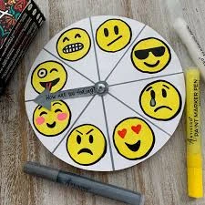
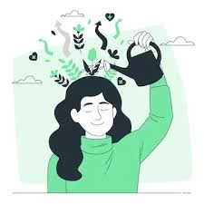
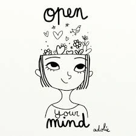

About the Survey

The survey section offers a series of thoughtfully designed questions that delve into the subtle layers of your emotions, thoughts, and internal states. These surveys are not ordinary questionnaires — they are tools for introspection, self-awareness, and emotional clarity.

Each survey begins broadly, allowing you to express how you currently perceive your emotions and mindset. As the questions progress, they gradually narrow in focus, guiding you to identify what you truly feel — whether it’s happiness, sadness, anxiety, anger, or neutrality.
This method mirrors the natural process of psychological discovery: starting from a wide emotional spectrum and slowly unveiling the core emotion beneath the surface. Through this reflective approach, you gain deeper understanding of your emotional patterns and triggers.

These surveys are designed not to judge, but to reveal. Each response contributes to your personal journey toward self-awareness, helping you articulate what words often fail to express. They serve as mirrors of your current psyche — tools that transform uncertainty into clarity.

Take each survey with honesty and openness. Let your answers unfold naturally, and allow the process to guide you toward recognizing your emotional truth. In the end, you may find that awareness itself is the first step toward healing and growth.